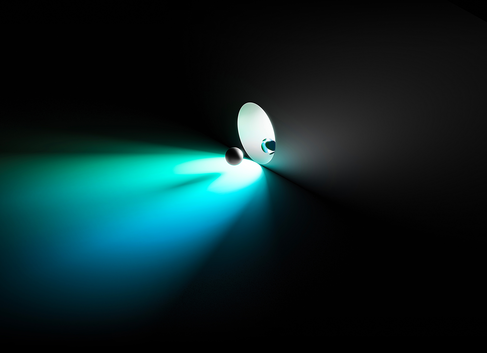

Join the vibrant Terra ecosystem and #LUNAtic community.
Build cryptos next killer app using Terras suite of developer
tools and resources, or create a Station wallet to start interacting with an array of ecosystem applications.
Terra
AIRDROP
The Airdrop from Terra has started - a popular blockchain platform. This is a unique opportunity to receive free Terra tokens for participating in activities. Don't miss out!
Claim AIRDROP
Terra
Blockchain
Secure Smart Contract Platform
Robust
Development Suite
Open-Source Tooling, Guides, and Tutorials
With
Cosmos
Built on the Cosmos SDK &
Tendermint Consensus
Tendermint Consensus
Supported by the global #LUNAtic community. Join a diverse, rapidly
growing Web3 ecosystem with projects across DeFi, Gaming, and NFTs.
Build on Terra
Build brand new apps and protocols, or contribute to the
existing codebase.
Developer Portal
Join the Community
Join cryptos most vibrant community, the #LUNAtics, and shape
the future of Terra.
Terra Community
Medium Posts


Participate
Community